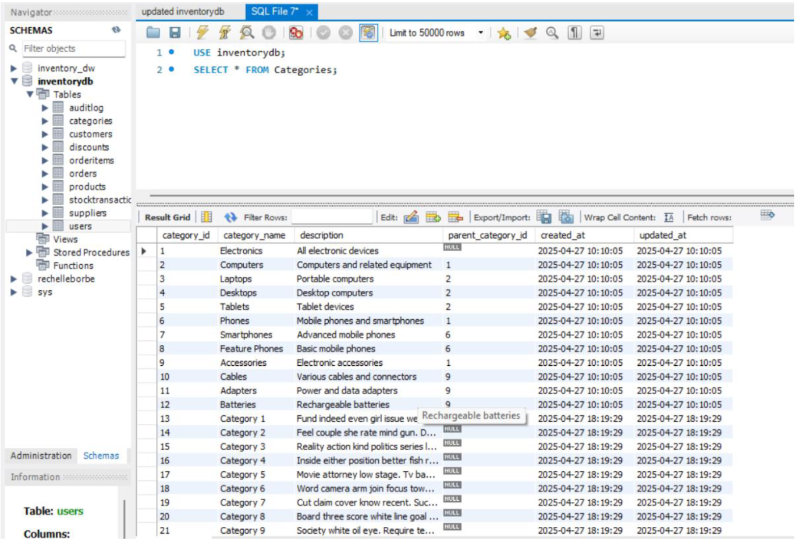
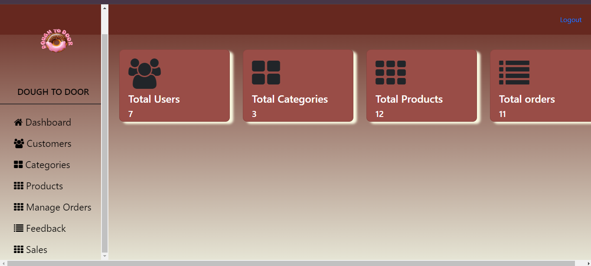
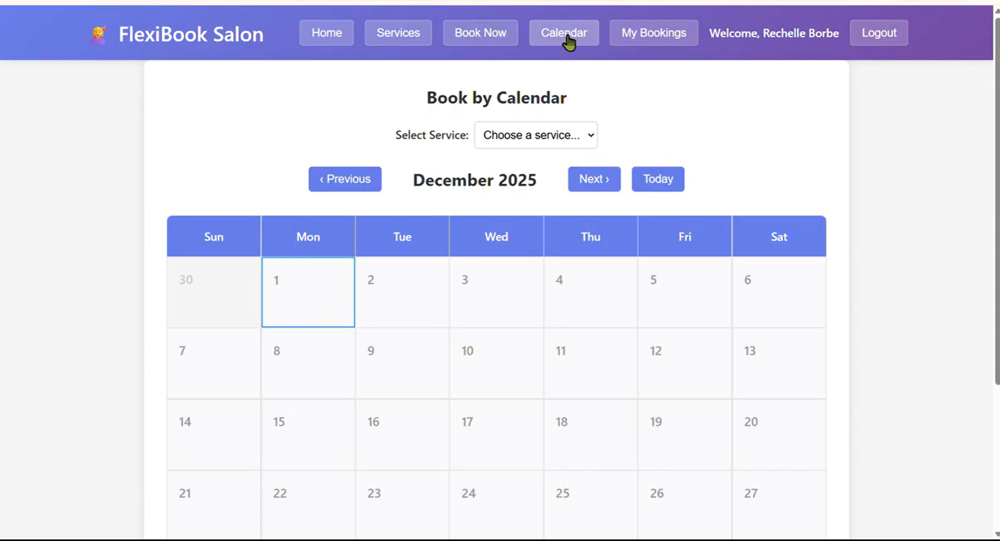
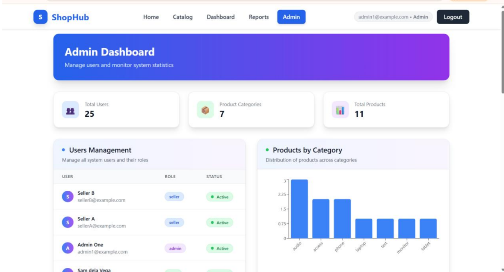
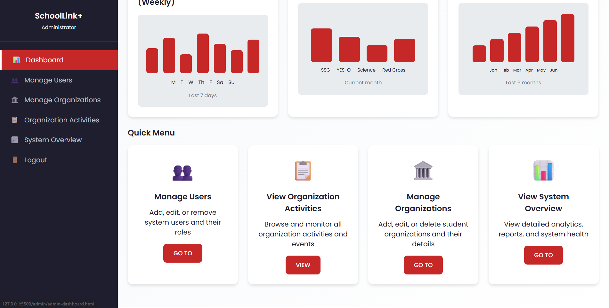
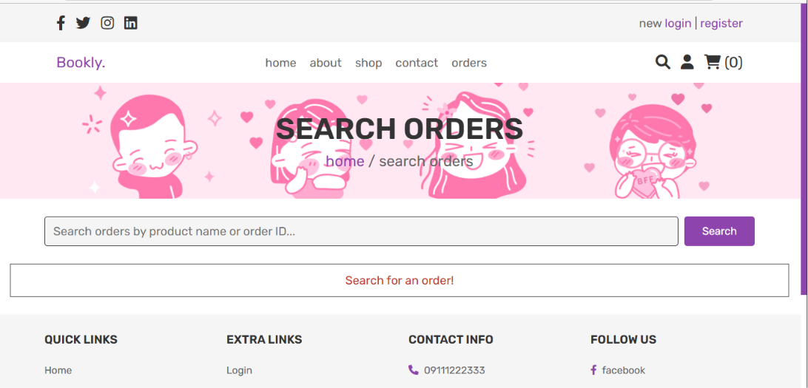

Explore the full-stack systems we've built, from concept to deployment. Each project showcases my skills in problem-solving, system architecture, and user-centered design.

A comprehensive enterprise solution designed to track, analyze, and optimize inventory operations. The system provides real-time visibility into stock levels, automates reordering processes, and generates actionable business intelligence reports for data-driven decision making.
Advanced analytics and reporting for stock movement, sales trends, and inventory forecasting.
Indexing, batch processing, and query optimization for handling large datasets efficiently.
Scalable architecture with cloud integration for real-time accessibility and data backup.
Secure authentication, role-based access control, and automated backup/recovery system.

A complete e-commerce platform for a bakery business, featuring a customer-facing storefront and a robust admin panel. The system handles everything from product management to order fulfillment with secure payment processing and inventory synchronization.
Full-featured cart with add/remove items, quantity adjustment, and real-time price calculation.
Secure registration/login, profile management, and order history tracking for customers.
Complete CRUD operations for products, categories, orders, and customer management.
Mobile-first approach ensuring optimal shopping experience across all devices.

A modern, real-time appointment booking system built with MERN stack. The platform features role-based access for customers and administrators, live availability checking, analytics dashboard, and automated email notifications for appointment confirmations.
Interactive calendar with live availability updates and instant booking confirmation.
Visual reports for booking statistics, revenue tracking, and business performance insights.
Separate interfaces for customers (booking) and admins (management & analytics).
Email confirmations, reminders, and updates sent automatically to customers.

ShopHub is a full-stack web system developed as an individual laboratory repository project focusing on modern frameworks, NoSQL databases, and RESTful API design. The system implements secure authentication, role-based access, and analytics using MongoDB aggregation.
Complete CRUD operations for users, products, and categories with proper HTTP methods.
JWT-based authentication system with signup/login and protected routes using Bearer tokens.
Three-tier access control: User (customer), Seller (product management), Admin (full control).
MongoDB aggregation for user statistics, top spenders, and product analytics with visual dashboards.

SchoolLink+ is a centralized web portal designed for Itaran National High School to streamline student organization management and guidance assessment processes. The system features a customizable assessment builder that allows the guidance counselor to create, manage, and distribute personality tests and evaluation forms independently — without developer access to student responses, ensuring compliance with the Data Privacy Act of 2012.
Centralized platform for student organizations to post announcements, manage events, and engage members — replacing fragmented Facebook group chats and manual coordination.
Privacy-wall feature allowing guidance counselors to create, edit, and manage personality tests and evaluation forms independently. Developers and admins cannot access student responses.
Web push notifications and email alerts for organization updates and assessment reminders, ensuring no student misses important announcements.
Guidance counselors can generate reports on assessment activities and extract data by student, grade level, section, or entire school population.
Four user roles: System Administrator, Guidance Counselor, Organization Officer, and Student — each with specific permissions and dashboards.
Built in compliance with Republic Act No. 10173 (Data Privacy Act of 2012). Student assessment responses are accessible only to the Guidance Counselor.
Fully responsive interface accessible on desktop and mobile web browsers without requiring a native mobile application.
Secure student registration with Learner Reference Number (LRN) verification against the official school list.

WEB-SYSTEM-REVERIE is a comprehensive web application developed for administrative and client management purposes. The system features a fully functional admin dashboard, client homepage, order processing, and reporting modules — designed for efficient business process management and data visualization.
Centralized dashboard for managing users, viewing reports, and monitoring key business metrics and system activities.
Complete order management system with order creation, tracking, and status updates for efficient fulfillment operations.
User-friendly client-facing interface with product/service browsing and intuitive navigation for enhanced user experience.
Comprehensive reporting features with GA16 dashboard for performance tracking and data-driven decision making.
Complete CRUD operations for clients and administrators with proper role-based access control.
Comprehensive data flow documentation for system architecture and process visualization.
Structured MySQL database design with proper normalization and efficient query optimization.
Fully responsive design ensuring accessibility across desktop and mobile devices.